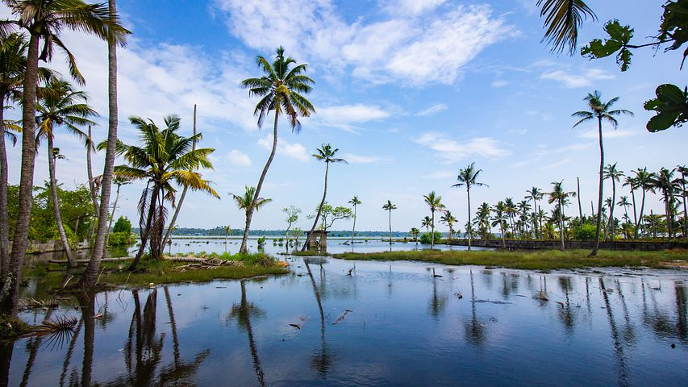
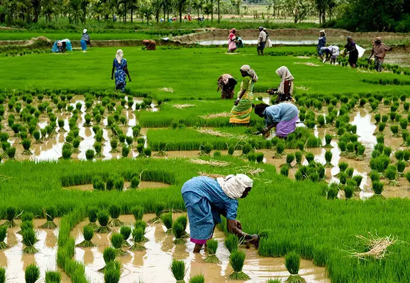
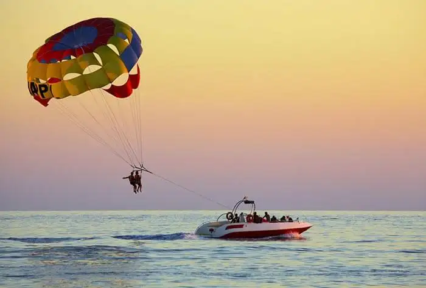

Alappuzha (or Alleppey) is a city on the Laccadive Sea in the southern Indian state of Kerala. It's best known for houseboat cruises along the rustic Kerala backwaters, a network of tranquil canals and lagoons. Alappuzha Beach is the site of the 19th-century Alappuzha Lighthouse. The city's Mullakkal Temple features a traditional design. Punnamada Lake's snake boat races are a well-known annual event.
Places To Visit In Alleppey
Vembanad Lake

The longest lake in India, Vembanad Lake flows across several districts in Kerala. It is called by several names including Punamada Lake, Kochi Lake, and Vembanadu Lake. Among the major highlights of this lake is Kettuvallams (houseboats), numerous resorts along the banks and the famous Nehru Trophy Boat Race.
Spanning over several districts of the state, Vembanad Lake is the second largest lake of Kerala. It is also a major site of tourist attraction in Alleppey and has a number of resorts on its banks. Lying in the heart of Kerala backwaters, the lake is famous for its scenic beauty. If one is just passing by the town and looking for places to visit in Alleppey in 1 day, then Vembanad Lake makes for an amazing spot to visit.
Kuttanad

Popularly known in the South as the Rice Bowl of Kerala, the village of Kuttanad is one of the few places in the world where farming is carried out below sea level. Its vast picturesque paddy fields, the various activities of toddy tapping, duck farming, coconut cultivation, & fishing, allure tourists from all over the world. It is considered one of the best tourist places in Alleppey because of its famous recipes for spicy curries and finger-licking delicacies.
Alappuzha Beach

With dense palm groves, a beautiful park nearby, an ancient lighthouse, pristine sceneries, & a charming blend of the sea, canals, lagoons, and freshwater rivers all under one roof, the Alappuzha Beach is among the top places to visit in Alleppey. The picturesque beach provides a perfect location for many of the movies shot here time and again. The beach is a paradise for people seeking relaxation as well as for those willing to indulge in adventure activities like parasailing, beach volleyball, & surfing and one of the top tourist places in Alappuzha